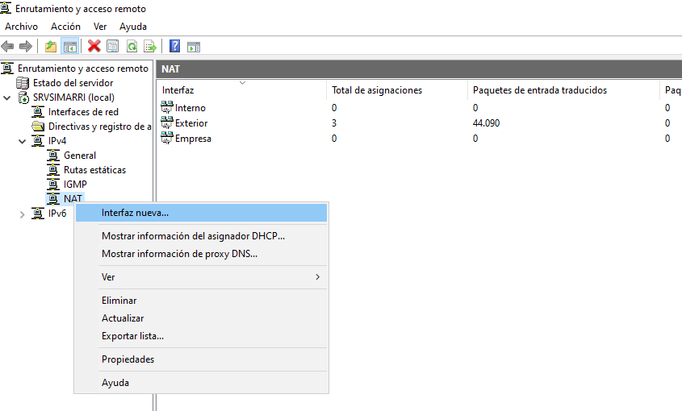

El servidor como router (enrutamiento y NAT)
Imagina un edificio donde ningún vecino tiene línea directa con el exterior: solo el portero sale a la calle. Cuando un vecino quiere algo de fuera, se lo pide al portero, el portero va, lo trae y se lo entrega. Desde fuera, nadie sabe que hay vecinos: solo ven al portero.
Un servidor Windows con dos o más tarjetas de red puede hacer exactamente de portero: recibe el tráfico de los equipos de una red interna, lo envía hacia Internet con su propia dirección y devuelve las respuestas a quien las pidió. A esto se le llama enrutar con NAT.
¿Por qué hacerlo con un servidor?
En una red real esta función la hace un router o firewall dedicado. Convertir un Windows Server en router es habitual en laboratorios, redes muy pequeñas o para aprender cómo funciona el proceso, pero no es lo normal en producción.
Conceptos mínimos
| Concepto | Qué hace | Por qué hace falta |
|---|---|---|
| Enrutar | Pasar paquetes de una red a otra | Una tarjeta no «sabe» reenviar tráfico de otra si no se activa |
| NAT (Network Address Translation) | Sustituir la IP privada de origen por la IP de la tarjeta externa | Las IP privadas no se enrutan por Internet (ver UD03) |
| Puerta de enlace del cliente | A quién envía el cliente lo que no es de su red | Debe ser la IP interna del servidor |
El recorrido de un paquete es este:
Cliente (red interna) → Servidor (tarjeta interna) → Servidor (tarjeta externa) → Internet
IP origen privada recibe y reenvía NAT: cambia la IP origen responde al servidor
Cuando llega la respuesta, el servidor recuerda quién la pidió y se la entrega al cliente correcto.
Requisitos previos
Antes de activar el enrutamiento comprueba lo hecho en el apartado anterior:
- [ ] La tarjeta externa tiene IP, máscara, puerta de enlace y DNS, y el propio servidor sale a Internet (
ping 8.8.8.8). - [ ] La tarjeta (o tarjetas) interna tiene una IP fija de su red y sin puerta de enlace.
- [ ] Los adaptadores tienen nombres descriptivos, para no confundir cuál es el externo.
Si el servidor no sale a Internet, los clientes tampoco
El servidor solo reenvía lo que él mismo puede alcanzar. Comprueba primero su propia conectividad.
Instalar el servicio de enrutamiento
El enrutamiento forma parte del rol Acceso remoto.
- Administrador del servidor → Administrar → Agregar roles y características (el proceso es el del apartado anterior).
- Marca el rol Acceso remoto.
- En Servicios de rol, marca Enrutamiento. El asistente añadirá DirectAccess y VPN (RAS) como dependencia: acéptalo.
- Completa el asistente e instala.
Instalar no es configurar
Hasta aquí solo se han copiado los componentes. El enrutamiento todavía no está activo.
Configurar y habilitar el enrutamiento con NAT
- Administrador del servidor → Herramientas → Enrutamiento y acceso remoto.


- Clic derecho sobre el nombre del servidor → Configurar y habilitar Enrutamiento y acceso remoto.
- En el asistente, elige Traducción de direcciones de red (NAT).
- Selecciona Usar esta interfaz pública para conectarse a Internet y marca la tarjeta externa.
- Cuando el asistente avise de que no hay servicios DNS ni DHCP configurados, elige configurarlos más tarde: los instalaremos aparte.
- Finaliza. El servicio arranca y el icono del servidor pasa a verde.
Cuidado: no elijas la interfaz equivocada
Si marcas como pública la tarjeta interna, el NAT funcionará al revés y los clientes no saldrán. Es el error más común, y la razón de dar nombres claros a los adaptadores.
Si hay más de una red interna
El asistente solo permite configurar una tarjeta interna. Para añadir el resto:
- En la consola, despliega servidor → IPv4 → NAT.
- Clic derecho en NAT → Nueva interfaz…
- Selecciona la tarjeta interna adicional.
- Marca Interfaz privada conectada a la red privada.
Entre redes internas no hace falta NAT
Con el enrutamiento activo, el servidor ya comunica entre sí las redes internas a las que está conectado. El NAT solo se aplica en la tarjeta pública, hacia el exterior.
Configurar los clientes
Para que un cliente use el servidor como salida, en sus propiedades de IPv4 hay que indicar:
| Parámetro | Valor |
|---|---|
| IP | Una IP libre del rango de la red interna del cliente |
| Máscara | La de esa red |
| Puerta de enlace | La IP interna del servidor en esa red |
| DNS | De momento, un DNS público; cuando exista un controlador de dominio, la IP del controlador |
Una puerta de enlace por red
Cada red interna tiene como puerta de enlace la IP que el servidor tiene en esa red, no la de otra tarjeta.
Verificar que funciona
Se comprueba de cerca a lejos, desde un cliente:
| Prueba | Qué demuestra |
|---|---|
ping <IP interna del servidor> |
El cliente llega al servidor |
ping 8.8.8.8 |
El servidor reenvía y hace NAT |
ping www.google.com |
Además el DNS responde |
tracert 8.8.8.8 |
El primer salto es la IP interna del servidor |
El primer salto de tracert es la prueba definitiva de que el tráfico pasa por el servidor.
El firewall del servidor
Si el cliente no puede hacer ping al servidor, revisa antes que la regla de eco ICMPv4 esté habilitada en el servidor (apartado anterior).
Errores típicos
| Síntoma | Causa probable | Solución |
|---|---|---|
| El cliente no llega ni al servidor | IP o máscara mal configuradas, o redes internas con nombres distintos | Revisar IP y nombre de la red interna |
| El cliente llega al servidor pero no a Internet | Puerta de enlace del cliente incorrecta | Debe ser la IP interna del servidor |
| El servidor sí sale, el cliente no | NAT con la interfaz pública mal elegida o enrutamiento sin activar | Revisar la consola de Enrutamiento y acceso remoto |
ping 8.8.8.8 va, pero no los nombres |
DNS del cliente incorrecto | Poner un DNS válido |
| Funciona, pero tras reiniciar no | Servicio no iniciado | Revisar que el servicio Enrutamiento y acceso remoto arranca automáticamente |
| Una red interna sale y otra no | Esa tarjeta no se añadió como interfaz privada | Añadirla en IPv4 → NAT |
Lista de comprobación
- [ ] El servidor tiene la tarjeta externa con puerta de enlace y la(s) interna(s) sin ella.
- [ ] El rol Acceso remoto → Enrutamiento está instalado.
- [ ] En la consola, la interfaz pública es la externa y las internas están como privadas.
- [ ] Los clientes tienen como puerta de enlace la IP interna del servidor.
- [ ]
tracertdesde un cliente muestra al servidor como primer salto.
Con PowerShell (opcional)
Para alumnado más avanzado
La instalación del servicio se puede hacer por consola. No es necesario para seguir el módulo.
| Tarea | Comando |
|---|---|
| Instalar el rol y la herramienta de enrutamiento | Install-WindowsFeature RemoteAccess, Routing -IncludeManagementTools |
| Habilitar el enrutamiento (sin VPN) | Install-RemoteAccess -VpnType RoutingOnly |
| Ver el estado | Get-RemoteAccess |
Pregunta de lectura: ¿qué diferencia hay entre instalar un rol y habilitar el servicio?
La configuración del NAT
La parte del NAT (qué interfaz es pública y cuáles privadas) se hace en la consola gráfica en estos apuntes. Su equivalente por línea de comandos usa herramientas más antiguas (netsh) y queda fuera de este módulo. Verifica los nombres de los cmdlets en tu versión de Windows Server, que han cambiado entre versiones.
Resumen
- Un servidor con varias tarjetas puede enrutar el tráfico entre redes y hacer NAT hacia Internet.
- Se instala con el rol Acceso remoto → Enrutamiento y se activa en la consola de Enrutamiento y acceso remoto.
- Hay que indicar cuál es la interfaz pública y cuáles son privadas.
- Los clientes usan como puerta de enlace la IP interna del servidor.
- Se verifica de cerca a lejos, y
tracertconfirma que el tráfico pasa por el servidor.